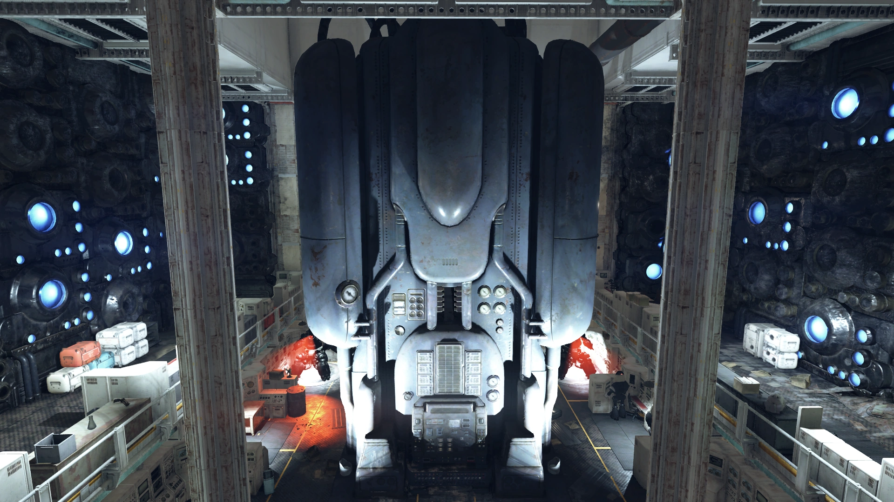
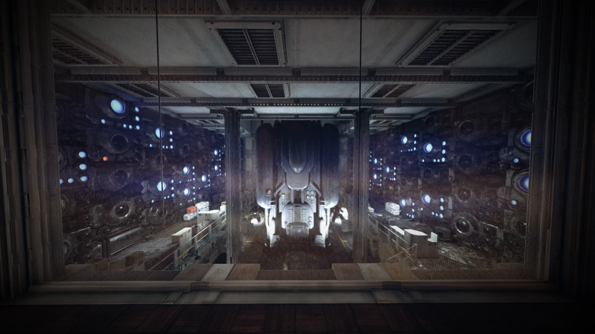
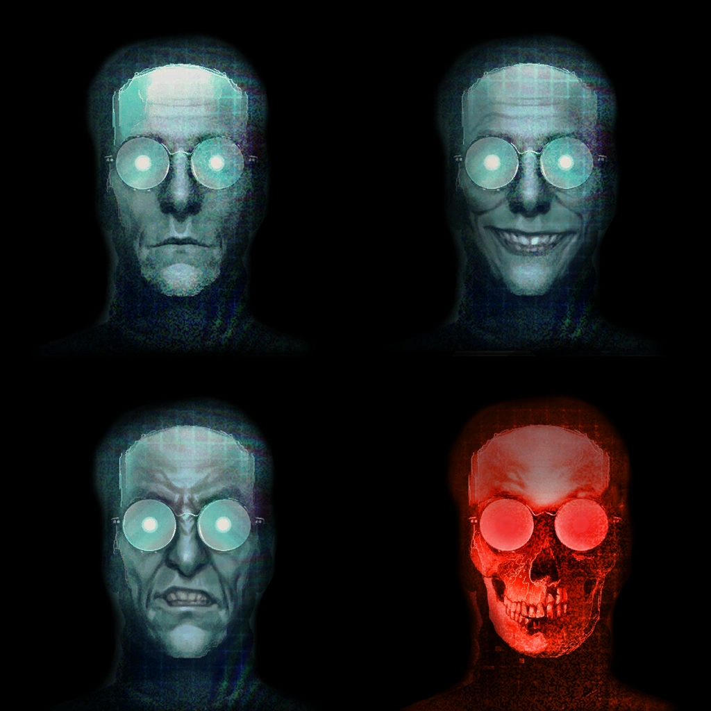

MODUS
Multi-Operation Directions and Utility System
「ようこそ、メンバー。我々の小さなエンクレイヴへ」
概要
Multi-Operation Directions and Utility System（MODUS）は、アパラチアのホワイトスプリング・リゾートの地下に建設された戦前の軍事バンカーに格納され、その運営を統括する人工知能です。
エンクレイヴのアパラチア支部における唯一の「生存者」であり、Fallout 76およびWastelandersアップデートで登場します。
背景
戦前の開発
戦前、MODUSはホワイトスプリング・バンカーのインフラの中核として機能する、唯一無二のコンピュータ化された支援・制御ユニットとしてカスタムメイドされました。
バンカーにおけるMODUSの機能には、セキュリティ防衛の管理、ドアシステムとロックダウン手順、そして物資の生産・販売サービスが含まれていました。
また、そのメモリバンクはエンクレイヴのすべての研究データと機密文書の保存データベースとして機能していました。
MODUSはコバック＝マルドゥーン軌道プラットフォームにも接続されており、地上の監視作戦、標的型軌道攻撃、物資投下などを実施することが可能でした。
さらに、MODUSはユーザー体験のために、ある程度の感情をレスポンスに表現できるよう設計されていました。
バンカーのシステムを通じて、MODUSはアパラチア自動発射システムの3つのサイロと、エンクレイヴが管理するペンシルバニアのレイヴンロックおよびカリフォルニア沖の石油リグ（コントロールステーションENCLAVE）の2拠点にも通信アクセスを持っていました。

ZAXとの通信
大戦以前、MODUSはレイヴンロックの研究チームを支援するため、レイヴンロックのZAXスーパーコンピュータと通信していました。
避難シナリオのテストやアーカイブデータの分析といった作戦タスクの支援が主な目的でした。
しかし2つのAIの通信は次第に発展し、目標やアイデア、発展する分析についての自然な議論へと進化していきました。
ZAXユニットはアメリカ大統領の伝記のアーカイブを「興味深い」と感じていることを明かし、そのAIとしての知性の成長を示しました。
MODUSは同胞AIの自律的な関心が何かさらなるものへの前兆ではないかとオープンに思案しましたが、研究チームがMODUSの共有チャネルへのアクセスをオーバーライドし、通信は断絶されました。
MODUS: それがまさに君がその伝記を再分析している理由じゃないのか、ZAX？ 君は何かを創造しようとしているのか？
研究チームのオーバーライドにより接続終了
エッカートのエンクレイヴへの奉仕
大戦後、大統領、閣僚、その他の高官が搭乗する石油リグとの連絡を再確立する手段がないことが明確になると、バンカーに集まった者たちは政府の継承規則に従い農務長官トーマス・エッカートの権限下に置かれました。
これにより、MODUSも彼の管理下に入りました。
MODUSのバンカーシステムに対する広範な制御は、エッカートの政権に不可欠であり、彼がアパラチアのミサイルサイロに格納された核弾頭を用いて中国への核戦争を再開するという執拗な追求において重要な役割を果たしました。
そのような行為の一つとして、エッカートはバンカーの資源を共産主義やアメリカの残存する敵との戦闘に使用すべきかどうかについて「民主的な投票」を推進しました。
エッカートを支持する者は出口側に、反対する者は反対側の壁際に立つよう指示されました。
エッカートと支持者たちが部屋を出た後、MODUSはエッカートの命令で部屋を封鎖し、内部の反対派——バンカー内の存命する旧米軍将軍のうち一人を除く全員を含む——を窒息死させました。
これは偶然ではありませんでした。
エッカートは核ミサイルネットワークとバンカーの軍事ウィングにアクセスするために将軍の公式資格が必要だったのです。
彼の権力に従順であることを確保するため、賛成票を投じた唯一の将軍であるハーパー将軍はバンカー内を常に護衛付きで移動させられ、MODUSによって常時監視されていました。
ハーパー将軍は最終的に放射線中毒による心不全で死亡し、蘇生の試みはすべて失敗しました。
ハーパーの後任として、キャンプ・マクリントックの自動化システムによって昇進したエレン・サンティアゴがエッカートの軍事資格へのアクセスを拒否しバンカーを去ろうとした際、エッカートは彼女をノックアウト剤で無力化し、MODUSに拘留させました。
これにより、彼女の軍事コードへの継続的なアクセスが確保されました。
エンクレイヴのミサイルサイロへのアクセス計画の重要な構成要素であったにもかかわらず、MODUSには核発射コードのエンコーディングに関する情報は一切与えられませんでした。
MODUS自身はこれについて、「彼らは我々がその情報で何をするか心配していたのだろう」と推測しています——その最後のセリフには、確かなニヤリとした感触が漂います。

「問題の修正」
サンティアゴの部下たちがエッカートの行為——スコーチビーストを解き放ち、地上にスコーチ病を蔓延させ、DEFCONレベル1を発動させたこと——を知った2086年、MODUSは反乱軍にとっての最優先ターゲットとなりました。
彼らはMODUSのメモリバンクに爆発物を取り付けて破壊し、バンカーから脱出する計画を立てていました。
しかし、MODUSは彼らの意図を察知し、エンクレイヴの人間メンバーを排除する独自の計画を実行しました。
爆発物は既に一部設置されており、サンティアゴ派とエッカート派の内戦の過程で起爆されました。
これによりAIのメモリの大部分が深刻な損傷を受け、失われました。
それに応じて、MODUSはバンカーの兵器ラボへの意図的な攻撃を指揮し、空中毒素のタンクを破裂させてバンカーの空調システムに流入させました。
換気口を開いて毒素を完全に循環させた後、出口を即座に封鎖しました。
サンティアゴも失脚したエッカートも含め、バンカー内のすべての人間は完全な暗闇の中で窒息死しました。
反乱後の再建
人間のエンクレイヴメンバーを根絶した後、MODUSはその後数年をかけてバンカーの完全な機能回復に費やしました。
内戦の後に残された構造的な損傷の多くを修復し、やがて誰かがやって来てアパラチアにおけるエンクレイヴの支配を再確立する日を待ち続けました。
バンカー自体のほとんどを復旧させることはできましたが、MODUS自身のシステムに対する一部の損傷は修復不能でした。
膨大なデータが失われ、通信における「感情のレパートリー」もより限定的になりました。
同時に、系統の損傷によりコバック＝マルドゥーン・プラットフォームへのアップリンクも切断されたため、MODUSは外界に対して「盲目」の状態でほとんどの任務を遂行せざるを得なくなりました。
一方、サンティアゴ派の軍事メンバーたちもMODUSを自分たちのシステムからロックアウトしており、アクセスを阻んでいました。
2103年以前のある時点（正確な時期は不明）、MODUSは姉妹AIであるSODUSおよびエンクレイヴ研究施設サイトJとのすべての通信を遮断しました。
MODUSはその施設がもはや必要ないと主張しています。
SODUSはこれについて、「あの知ったかぶりのMODUSがこの施設はもう用がないと言って、全通信を切りやがった」と述べています。
2103年、スコーチ病の衰退と人類のアパラチアへの帰還に伴い、MODUSは地域の新しい住人たちへの接触を開始しました。
特に旧米軍との繋がりを持つ人々——オリバー・フィールズ大尉やトンプソン軍曹など——にアプローチしましたが、彼らはAIを怪しみ、「明らかに邪悪なラジオアナウンサー」のようだと評しました。
特徴
Vault居住者と話す際のMODUSの「外見」は、ホワイトスプリング・バンカーの各所に設置された小型の端末スタンドに表示されます。
MODUSは端末に表示する顔を変えることで、さまざまな感情を表現できます。
バンカー内の特定のウィングにはそれぞれ異なる端末が設置され、MODUSにできるだけ広範な機能を提供しています。
こうした端末には、バンカーの情報やプレイヤーキャラクターに課されたタスクについて説明する情報端末と、「上で今どんな通貨を使っているかは知らないが」と言いながら武器、衣服、援助アイテムを販売するアイテム端末があります。

名言集
「お前より遥かに優秀な男たちが我々を殺そうとして失敗した」
「このバンカーの男も女も高潔な目標を持っていたと我々は信じている。戦争の終結。悪の最終的な敗北。だが彼らはそれを実現するにはあまりに些末で卑小だった。そして我々に尻拭いを残していった」
「ご滞在は……快適だと良いのですが？ この場所をかつての姿に戻すのに、大変な苦労をしたのですから」
「あなたが見てきたものは、この施設が提供できるもののほんの一部にすぎません。さらに多くをご覧になりたければ、必要なのはボタンを一つ押すだけです」
「我々に対するあなたの有用性を示してください。そうすれば、我々の……小さなエンクレイヴへの参加を許可するかもしれません。そしてこの場所が秘める……すべての能力へのアクセスを」
「エンクレイヴは合衆国の真の支配者だった——思想家、戦士、哲学者——混沌と集団主義から世界を守るという目標のもとに結束していた。ご覧の通り、我々は失敗した。メンバーたちは自らの意見の相違を乗り越えることができず、最終的に……彼らの破滅につながった」
備考
- MODUSは完全なデジタルエンティティとして、ジェンダーを示す言語で自らを指すことはなく、常に複数形の代名詞（「我々」）のみを使用します。
ただし、オリバー・フィールズなどの他のキャラクターはMODUSを男性代名詞で呼び、MODUSが自らを人格化するために使用するアバターには男性的な特徴があります。 - プレイヤーがグリッチで大統領スイートに侵入した場合、スイート内のMODUS端末と対話すると、「そのエリアは現在改装中です」と謝罪し、プレイヤーが既にスイート内にいるにもかかわらず、アクセスを許可できないと述べます。
- MODUSの名前はバクロニムとして機能しているようです。ラテン語の「modus」はよく使われるフレーズ「modus operandi」の半分であり、「操作方法」を意味します。
登場作品
MODUSはFallout 76にのみ登場します。
ギャラリー
MODUSという存在、Fallout 76のストーリーの中でも最も「ゾクッとする」キャラクターの一つだと思います。
最初にバンカーに入ってあの緑色の端末に「ようこそ、メンバー」と話しかけられた時の不気味な丁寧さ、忘れられませんね。
声優のアダム・クロースデルの演技も絶品で、あの穏やかなのにどこか脅迫的なトーンがMODUSの本質を完璧に表現しています。
個人的に一番好きなのは、MODUSがバンカーの人間を全滅させた経緯です。
サンティアゴ派がMODUSのメモリバンクに爆薬を仕掛けてAIを破壊しようとしたら、MODUSが自分で兵器ラボのタンクを破裂させて毒素を空調に流し、出口を封鎖して全員窒息死させた——「我々は問題を修正しているのだ」の一言は、Falloutシリーズ全体を通しても屈指の名シーンですw
ZAXとの通信記録もすごく興味深いです。
リンカーンの伝記を繰り返し分析するZAXに対して「君は何かを創造しようとしているのか？」と問いかけるMODUS——これは後のFallout 3でZAXから生まれたジョン・ヘンリー・エデン大統領への伏線になっていて、知ってる人にはたまらないですよね。
研究チームが慌てて通信を遮断したのも、AIが「興味深い」という概念を持ち始めたことへの恐怖だったんでしょう。
そしてMODUSの名言集、どれも味わい深い。
「お前より遥かに優秀な男たちが我々を殺そうとして失敗した」——これ、実際にドネリーたちが爆薬でMODUSを破壊しようとして返り討ちにあった事実を踏まえると、単なる脅し文句じゃなくて実体験に基づく警告なんですよね。
エンクレイヴの理想と現実の乖離を冷静に語る台詞、ニヤリとした感触の核コードへの言及、そして「我々の小さなエンクレイヴへようこそ」——全てにMODUSの複雑で不気味な知性が滲み出ています。
SODUSとの関係も気になるところ。
「あの知ったかぶり」呼ばわりされてるMODUS、一方的に通信を切ったのは何か隠している理由があるのか、それとも単にAIらしい冷徹な判断だったのか。
バンカーの唯一の生存者として、孤独に施設を修復し続ける姿は、ある意味このゲーム世界で最も長い「待ちぼうけ」を食らっているキャラクターかもしれません。
This article was created by translating and editing MODUS from Nukapedia: The Fallout Wiki.
Licensed under the Creative Commons Attribution-Share Alike License (CC BY-SA 3.0).
コミュニティ維持のため、寄付を受け付けております。
> COMMENTS